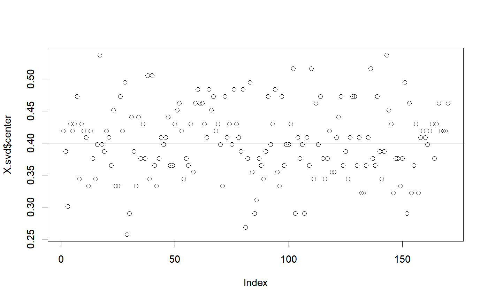
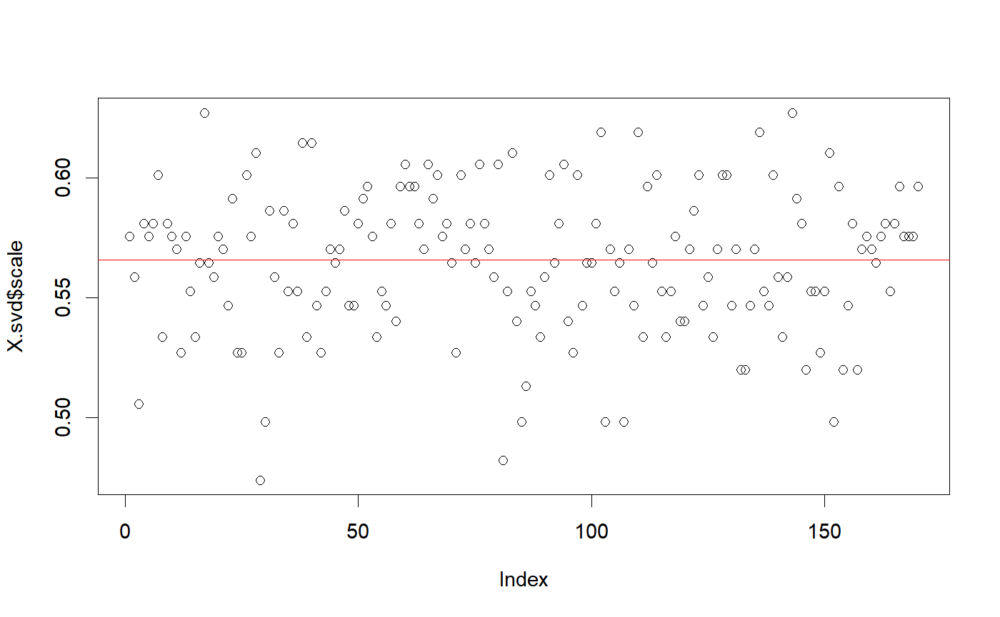

Binomial(n, p) scaling where n is fixed and p is estimated.
snp_scaleBinom(nploidy = getOption("bigsnpr.nploidy"))
| nploidy | Number of trials, parameter of the binomial distribution.
Default is |
|---|
A new function that returns a data.frame of two vectors
"center" and "scale" which are of the length of ind.col.
You will probably not use this function as is but as the
fun.scaling parameter of other functions of package bigstatsr.
This scaling is widely used for SNP arrays. Patterson N, Price AL, Reich D (2006). Population Structure and Eigenanalysis. PLoS Genet 2(12): e190. http://dx.doi.org/10.1371/journal.pgen.0020190.
set.seed(1) a <- matrix(0, 93, 170) p <- 0.2 a[] <- rbinom(length(a), 2, p) X <- add_code256(big_copy(a, type = "raw"), code = c(0, 1, 2, rep(NA, 253)))#> Warning: Assignment will down cast from double to raw. #> Hint: To remove this warning, use options(bigstatsr.typecast.warning = FALSE).X.svd <- big_SVD(X, fun.scaling = snp_scaleBinom())#> (2)str(X.svd)#> List of 5 #> $ d : num [1:10] 22.2 21.6 21.5 21.2 20.8 ... #> $ u : num [1:93, 1:10] -0.0732 0.0378 0.0762 -0.0364 -0.0444 ... #> $ v : num [1:170, 1:10] -0.1075 0.0331 -0.0592 0.0504 -0.1216 ... #> $ center: num [1:170] 0.419 0.387 0.301 0.43 0.419 ... #> $ scale : num [1:170] 0.576 0.559 0.506 0.581 0.576 ... #> - attr(*, "class")= chr "big_SVD"plot(X.svd$center)abline(h = 2 * p, col = "red")plot(X.svd$scale)abline(h = sqrt(2 * p * (1 - p)), col = "red")